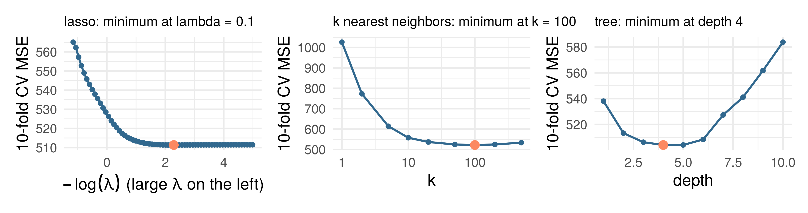
Week 7: tuning and regularization
LSE
Part 1: cross-validation
Part 2: the price of flexibility
Part 3: ridge and the lasso side by side
Part 4: a penalty on wiggliness
Part 5: more inputs than observations
Five functional structures, each with a knob: \(\lambda\), \(J\), depth, \(M\), and \(k\) for nearest neighbors. Each knob was chosen on the selection set, and the test set opened once
This week: choosing the knob with less waste (cross-validation); what the choice costs, as a formula in \(n\) and the number of inputs; and what two penalties do to each coefficient, exactly, in the simplest design
The selection set, \(D'\), chose the knob: fit \(\hat f_\lambda\) on \(D\) for a grid of \(\lambda\), score each on \(D'\), keep the best, refit on \(D \cup D'\). Common when one fit is expensive
When one fit is cheap:
Idea: swap \(D\) and \(D'\) and get two estimates, \(\hat R(\hat f_\lambda)\) and \(\hat R(\hat f'_\lambda)\). Average these and choose \(\hat\lambda\) using the average
Idea: apply the same process with several “folds” of data
Each subset used once as the held-out set, and \(K - 1\) times for training
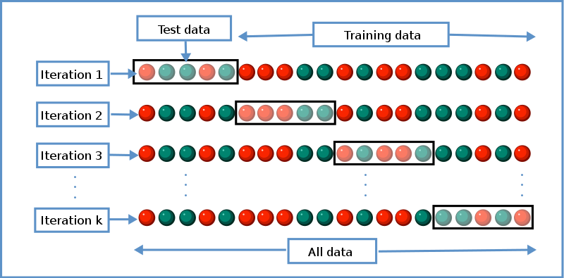
Gives \(K\) estimates of the held-out error at each \(\lambda\)
Credit: Wikipedia
Each subset used once as the held-out set, and \(K - 1\) times for training
Choose \(\hat\lambda\) to minimize \[ \hat R_{K\text{-cv}}(\lambda) = \frac1K\sum_{k=1}^K \hat R_k\big(\hat f^{(k)}_\lambda\big) \] where \(\hat f^{(k)}_\lambda\) is fitted on the data that “holds out” the \(k\)th fold, and \(\hat R_k\) is its error on that fold
Then refit the model \(\hat f_{\hat\lambda}\) at that value \(\hat\lambda\) on the entire dataset

The 5,000 training tracks, \(K = 10\). One curve per family, the knob where each is lowest (orange). Every fold’s fit standardizes on its own training rows. The selection set was not used: each track was fitted on nine times and scored once
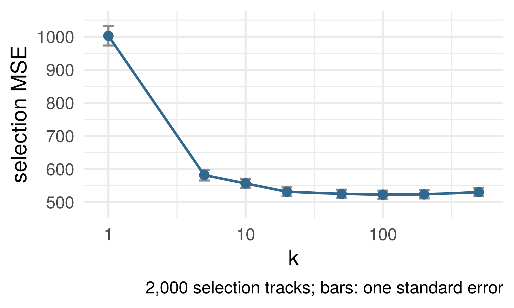
\(m\) held-out units, losses \(L_j = \ell(y_j^{\text{test}}, \hat f(x_j^{\text{test}}))\), independent if the units are, with \(\hat f\) held fixed: \[ \widehat{\text{Err}} = \frac1m\sum_{j=1}^m L_j, \qquad \text{SE} = \frac{\text{sd}(L)}{\sqrt m} \] The uncertainty of this fit’s score on \(m\) new units
On the selection tracks, \(k = 50\), \(100\) and \(200\) sit within one bar of each other: a flat bottom, and “the best \(k\)” is any of them
Think of it as a way to choose model complexity
Beware common cross-validation errors! From Duda and Hart quoted in MLstory
… the same data were often used for designing and testing the classifier. This mistake is frequently referred to as “testing on the training data.” A related but less obvious problem arises when a classifier undergoes a long series of refinements guided by the results of repeated testing on the same data. This form of “training on the testing data” often escapes attention until new test samples are obtained.
Ideally, the test set should be kept in a “vault,” and be brought out only at the end of the data analysis. Suppose instead that we use the test-set repeatedly, choosing the model with smallest test-set error. Then the test set error of the final chosen model will underestimate the true test error, sometimes substantially.
Cross-validate the entire model-building pipeline (not just one step), and only do it once – or at least not many times
Choosing \(K\): larger \(\to\) \(\hat R_{K\text{-cv}}\) has lower bias, more variance. Often use \(K = 5\) or \(10\)
glmnet’s own cross-validation of the lasso on the training tracks, the same ten folds. Top axis: how many coefficients are nonzero
Dotted lines: lambda.min, the minimum; lambda.1se, the largest \(\lambda\) within one bar of it, the one-standard-error rule: a flat bottom, so take the simpler model
The bars, \(\text{sd}/\sqrt K\) of the fold scores, are a heuristic (the folds share rows). The minimum is chosen among 67 candidates on these rows: biased low, a score to choose with, not to report
The CV curve put \(k\) at 100 on 5,000 tracks and 11 inputs. Where would it sit with 50,000 tracks? With 110 inputs?
Bias–variance decomposition, \(k\)-NN form: inputs fixed, \(y_i = f^\star(x_i) + \varepsilon_i\), noise mean \(0\), variance \(\sigma^2\), \(\hat f_k(x_0)\) the mean of the \(k\) nearest training outcomes: \[ \mathbb E\big[(Y_0 - \hat f_k(x_0))^2\big] = \sigma^2 + \Big[f^\star(x_0) - \tfrac1k\textstyle\sum_l f^\star(x_{(l)})\Big]^2 + \sigma^2/k \]
The variance, \(\sigma^2/k\), is a formula. The bias is an average of \(f^\star\) over the \(k\) nearest inputs, and says nothing until we assume something about \(f^\star\)
What is the smallest assumption on \(f^\star\) that bounds the bias? Write it down.
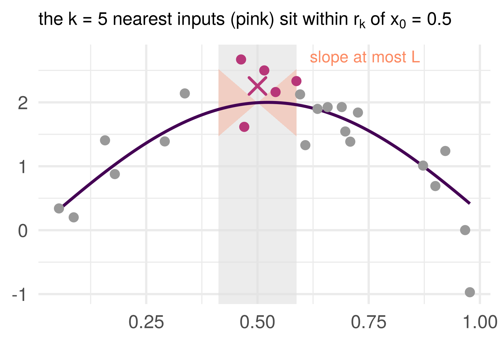
\(r_k(x_0)\): the distance from \(x_0\) to its \(k\)th nearest training input. Every neighbor is within it
Assume \(f^\star\) is \(L\)-Lipschitz: \(|f^\star(x) - f^\star(x')| \le L\,\|x - x'\|\). Then each neighbor’s \(f^\star\) is within \(L\,r_k\) of \(f^\star(x_0)\), so their average is too
\(k\)-NN rate. Inputs fixed, \(f^\star\) \(L\)-Lipschitz, noise variance \(\sigma^2\): \(\;\mathbb E\big[(\hat f_k(x_0) - f^\star(x_0))^2 \,\big|\, \text{inputs}\big] \;\le\; L^2\, r_k(x_0)^2 + \sigma^2/k\)
Proof. The decomposition’s bias is \(\frac1k\sum_l [f^\star(x_{(l)}) - f^\star(x_0)]\), each term at most \(L\,r_k\) in size, so the square is at most \(L^2 r_k^2\); the variance is \(\sigma^2/k\). \(\blacksquare\)
How far away is the \(k\)th neighbor? Inputs i.i.d. uniform on \([0, 1]^d\). A ball around \(x_0\) holding \(k\) of the \(n\) points has volume about \(k/n\), so its radius is about \((k/n)^{1/d}\)
Nearest-neighbor distance lemma (stated). For \(x_0\) away from the boundary, \(\mathbb E\big[r_k(x_0)^2\big] \lesssim (k/n)^{2/d}\), the constant depending on \(d\) only.
In one dimension, \((k/n)^2\): the \(k\)th neighbor is about \(k/2n\) away on each side. In \(d = 10\), \((k/n)^{1/5}\): with \(k/n = 1/100\), the radius is \(0.4\) of the side of the cube
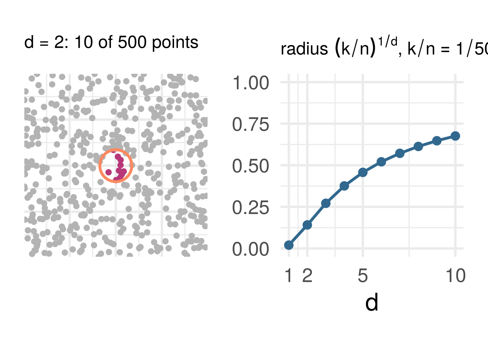
Curse of dimensionality: in many dimensions, the nearest \(1\%\) of the data is not near.
Put the two together and choose \(k\): \[ \mathbb E\big[(\hat f_k(x_0) - f^\star(x_0))^2\big] \;\lesssim\; L^2 (k/n)^{2/d} + \sigma^2/k \] The first term grows with \(k\), the second shrinks. They balance at \(k \asymp n^{2/(d+2)}\), and there \(\text{error} \asymp n^{-2/(d+2)}\)
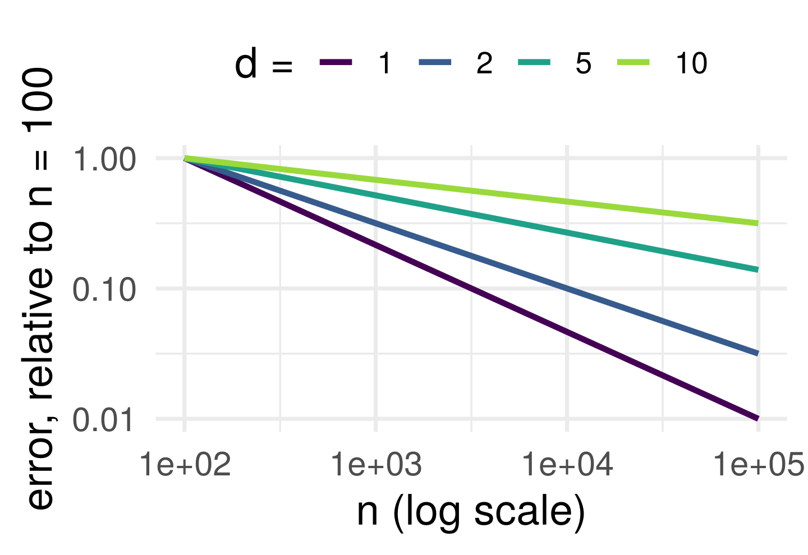
To halve the error, \(2^{(d+2)/2}\) times the data: \(2.8\times\) in \(d = 1\), \(4\times\) in \(d = 2\), \(11\times\) in \(d = 5\), \(64\times\) in \(d = 10\)
Minimax rate (stated). Over all \(L\)-Lipschitz \(f^\star\) in \(d\) dimensions no estimator beats \(n^{-2/(d+2)}\) for every \(f^\star\) (Stone 1982); a particular \(f^\star\), a constant say, does better.
| Assumption on \(f^\star\) | Rate (up to constants) | The bet |
|---|---|---|
| \(L\)-Lipschitz in \(d\) inputs | \(n^{-2/(d+2)}\) | nearest neighbors, a tree, a network: only smoothness |
| a sum of a fixed number of Lipschitz one-input curves (design conditions) | \(n^{-2/3}\), the one-input rate | additive splines: no interactions |
| linear with \(s\) nonzero coefficients among \(p\) (sparsity, design and noise conditions) | about \(s\log p/n\) | the lasso: a sparse plane |
Assume less and pay the rate in \(d\). Assume more and pay a one-dimensional rate, or \(\log p\) instead of \(d\): if the assumption holds. The second and third rates are stated, not derived
No free lunch theorem, with numbers: the Lipschitz class is already an assumption, and nothing beats its rate for every \(f^\star\) in it. A faster rate is bought with a stronger assumption, and is paid back only when the assumption is true.
Estimating \(\mu \in \mathbb R^p\) from an i.i.d. sample \(\mathbf Y_1, \ldots, \mathbf Y_n \sim N(\mu, \sigma^2 I)\). The MLE is \(\bar{\mathbf Y}\) (obvious and best, right?)
Charles Stein discovered in the 1950’s that the MLE is inadmissible if \(p > 2\) 🤯
The James–Stein estimator shrinks \(\bar{\mathbf Y}\) toward some other point, any other point, chosen a priori, e.g. 0: \[ \hat\mu_{\text{JS}} = \Big(1 - \frac{(p-2)\sigma^2/n}{\|\bar{\mathbf Y}\|^2}\Big)\bar{\mathbf Y}, \qquad \text{MSE}(\hat\mu_{\text{JS}}) < \text{MSE}(\bar{\mathbf Y}) \text{ for all } \mu, \text{ if } p > 2 \]
Statisticians emphasized unbiasedness. After Stein’s example, bias is not always bad. Most ML methods use bias this way
\[ \text{ridge: } \min_\beta \|\mathbf y - \mathbf X\beta\|_2^2 + \lambda\|\beta\|_2^2 \qquad\qquad \text{lasso: } \min_\beta \|\mathbf y - \mathbf X\beta\|_2^2 + \lambda\|\beta\|_1 \]
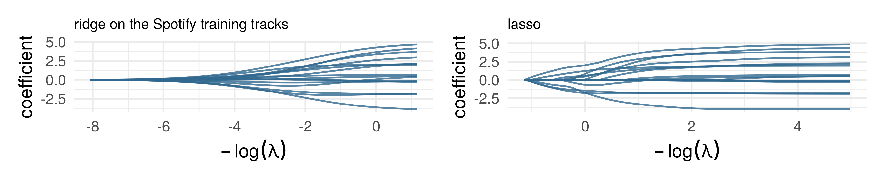
Two norms, two shapes of path: ridge’s coefficients shrink and are never zero, the lasso’s are exactly zero over whole ranges of \(\lambda\). What does \(\lambda\) do to one coefficient? In general the coefficients interact; in one design they do not
\(\mathbf X^T\mathbf X = I\) (orthonormal columns, \(p \le n\)): \(\hat\beta = \mathbf X^T\mathbf y\) with \(z_j = \mathbf x_j^T\mathbf y\), and \(\|\mathbf y - \mathbf X\beta\|^2 = \text{const} + \sum_j (z_j - \beta_j)^2\): each coefficient has its own problem
Ridge, one coordinate: \(\tfrac12(z - b)^2 + \tfrac\lambda2 b^2\), smooth; derivative zero at \(\hat b = z/(1 + \lambda)\)
Lasso: \(\tfrac12(z - b)^2 + \lambda|b|\) (half the last slide’s \(\lambda\)), a kink at \(0\). \(\hat b > 0\) needs \(-(z - b) + \lambda = 0\), so \(\hat b = z - \lambda\) and \(z > \lambda\); \(\hat b < 0\) gives \(\hat b = z + \lambda\) and \(z < -\lambda\); for \(|z| \le \lambda\) neither works: the minimum is at the kink, \(\hat b = 0\)
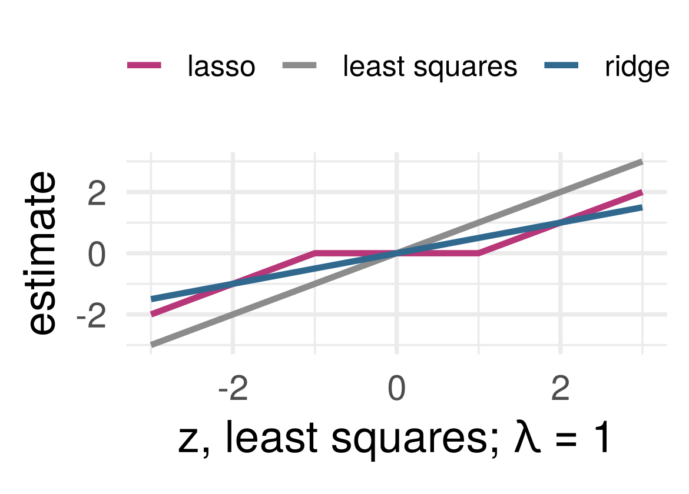
Soft thresholding. \(\arg\min_b \tfrac12(z - b)^2 + \lambda|b| = \mathrm{sign}(z)\,(|z| - \lambda)_+\): move \(z\) toward zero by \(\lambda\), stopping at zero. Ridge divides by \(1 + \lambda\) and is zero only at \(z = 0\).
Same design, noise variance \(\sigma^2\). Least squares, \(\hat\beta = \mathbf X^T\mathbf y\): unbiased, variance \(\sigma^2\) per coefficient. Divide by \(1 + \lambda\): \[ \text{bias}_j = -\frac{\lambda\,\beta_j}{1 + \lambda}, \qquad \mathrm{Var}(\hat\beta_{\lambda,j}) = \frac{\sigma^2}{(1 + \lambda)^2} \]
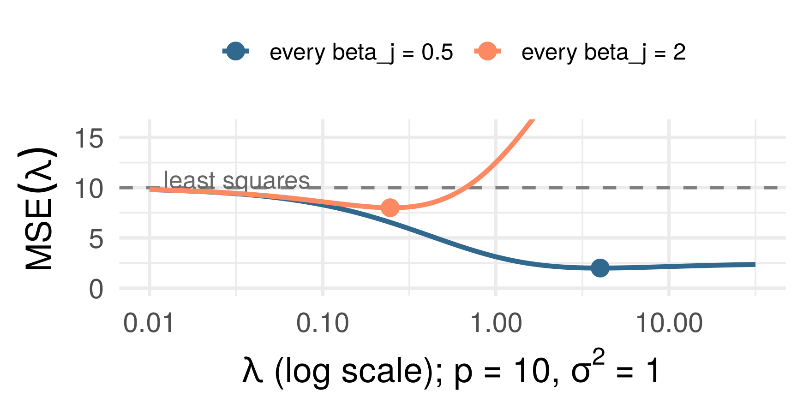
Bias–variance decomposition, ridge form. \(\mathbf X^T\mathbf X = I\), \(\mathbf y = \mathbf X\beta + \boldsymbol\varepsilon\), noise mean \(0\), variance \(\sigma^2\): \(\;\mathrm{MSE}(\lambda) = \mathbb E\|\hat\beta_\lambda - \beta\|^2 = \sum_{j=1}^p (\lambda^2\beta_j^2 + \sigma^2)/(1 + \lambda)^2\), with slope \(-2p\sigma^2 < 0\) at \(\lambda = 0\): for every \(\beta\), some \(\lambda > 0\) beats least squares.
Proof: exercise 1. Which \(\lambda\)? The best is \(\sigma^2\) over the mean of \(\beta_j^2\), noise over signal: unknown
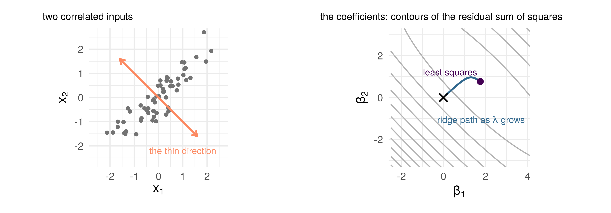
Two correlated inputs: the contours are long along the direction the data cannot pin down (one coefficient up, the other down, the fit barely changes). Ridge’s path from least squares to zero moves fastest along it: it first removes what the data say least about
\(n = 100\) observations, \(p = 200\) inputs, \(\mathbf y = \mathbf X\beta + \boldsymbol\varepsilon\) with only 7 nonzero coefficients. Lasso and ridge at the \(\lambda\) cross-validation chooses
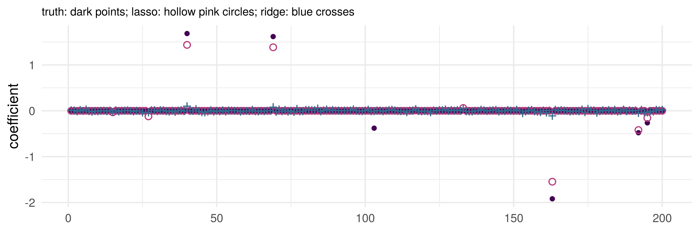
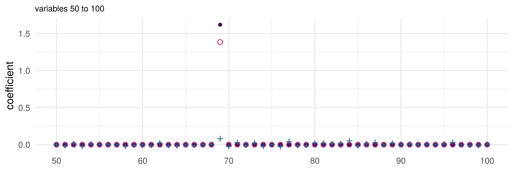
But all is not lost! Penalized regression to the rescue
Only 7 of 200 variables have nonzero coefficients
All coefficients nonzero 😰
10 nonzero estimates: 5 of the 7 true ones, and 5 false positives, most of them small 😎
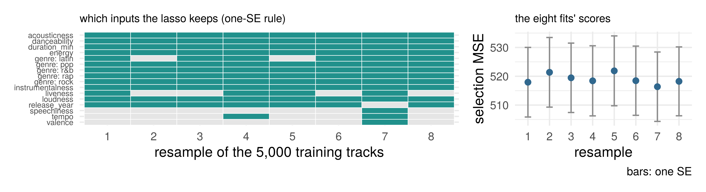
Eight resamples of the training tracks, the lasso’s \(\lambda\) chosen by cross-validation on each. The set of kept inputs changes from one resample to the next; the fits’ scores barely do. The same instability as a tree’s cutoffs: a prediction survives it, a list of the inputs that matter does not
\(\hat\beta_{\text{lasso}}(\lambda)\) at a fixed \(\lambda\)
\(\hat\beta_{\text{lasso}}(\hat\lambda)\) at a data-chosen \(\hat\lambda\)
Different in general! Theoretical results about the first (the rate, the orthogonal-design formula) may not apply to the second
Choosing on a dataset is empirical risk minimization over a finite class: the winner’s score on the rows it was chosen on is biased low (two equal candidates with scores \(r \pm 1\): the winner’s is \(r - \tfrac12\) on average). The CV curve’s minimum is such a winner, over 67 candidates.
So: choose \(\lambda\) on the CV curve, report a score from rows the choice never touched (the vault), and read the kept inputs as a prediction’s parts, not as a discovery
The spline of the structures lecture: \(f(x) = \beta_0 + \sum_{j=1}^J \beta_j b_j(x)\), \(J\) the knob. Instead: take a large \(J\) as a ceiling, and penalize wiggliness
\[ \min_f\; \textstyle\sum_{i=1}^n \big(y_i - f(x_i)\big)^2 + \lambda\int f''(x)^2\,dx \] \(\lambda = 0\): the \(J\)-basis fit. \(\lambda \to \infty\): \(f'' = 0\), a straight line. In between: \(\lambda\) chosen by cross-validation
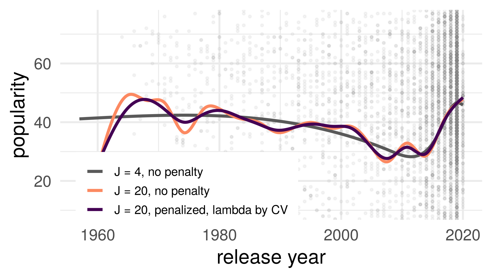
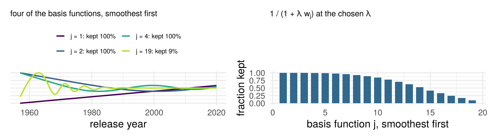
In the right basis the penalty acts coefficient by coefficient: coefficient \(j\) is shrunk by \(1/(1 + \lambda w_j)\), \(w_j\) the wiggliness of basis function \(j\). The straight line (\(w = 0\)) is never shrunk; the wiggles nearly vanish. Ridge’s formula, with a weight
\(\mathbf X\) is \(n \times p\), \(p > n\), full row rank. Every \(\beta\) with \(\mathbf X\beta = \mathbf y\) solves the normal equations: infinitely many fits, training error zero for all of them. lm prints NA
Ridge is defined for every \(\lambda > 0\), and \[ \hat\beta_\lambda \;\longrightarrow\; \hat\beta_{\min} = \mathbf X^T(\mathbf X\mathbf X^T)^{-1}\mathbf y \quad \text{as } \lambda \to 0^+ \] the minimum-norm interpolant: of all the zero-error fits, the one with the smallest \(\|\beta\|\)
Gradient descent on least squares, started at \(\beta = \mathbf 0\), stops at the same point (stated)
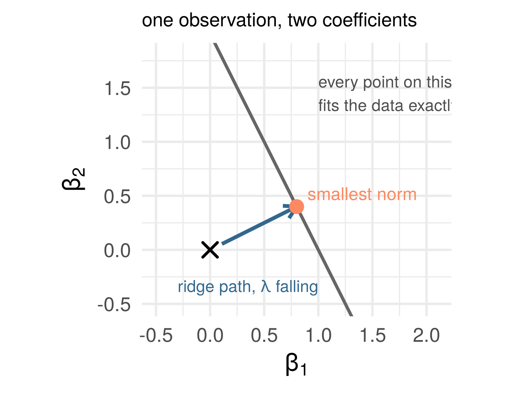
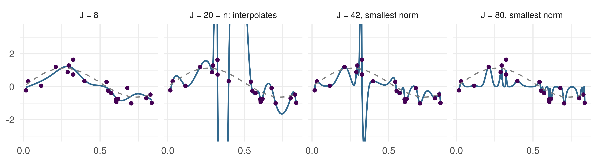
\(n = 20\) points, a natural-spline basis with \(J\) functions: least squares up to \(J = n\), the smallest-norm zero-error fit beyond. At \(J = 20\) the curve passes through every point and swings between them; at \(J = 80\) it still passes through every point, and is calmer. Zero training error does not say which zero-error fit you have. The rule that picks one (smallest norm) is an inductive bias, and it is doing the regularizing
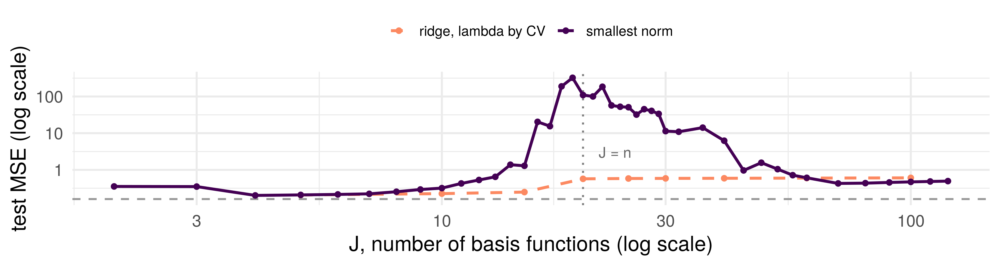
Test MSE against \(J\) (test inputs inside the training range), averaged over 50 draws of the 20 points. Least squares then smallest norm: the U-curve up to \(J = n\), a spike at the interpolation threshold, a second descent beyond it. The same basis with a ridge penalty chosen by cross-validation never interpolates and has no spike. Dashed: the noise variance
Does not change. The bias–variance decomposition is an identity; it holds on every point of both curves. Training error zero still says nothing about the risk (optimism theorem)
Changes. The folk version, “more parameters, more variance”, read as a function of the parameter count alone. It is right for one way of fitting with \(\lambda\) chosen by cross-validation. It is wrong for a rule that interpolates: the variance of the smallest-norm fit spikes at \(J = n\), where the design is nearly singular (the reason ridge was invented), and falls past it, because the rule itself changes with \(J\)
Four dimensions, not one: a family was a bet on the shape of \(f^\star\), and no single scale ran from simple to complex. The parameter count is not the knob either. How the fit is chosen is.
The bias–variance trade-off is one of the most important pillars of statistical wisdom. If we make a model too complex, it overfits to the training data… or does it?
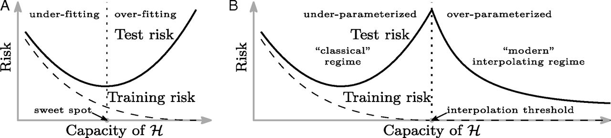
Belkin, Hsu, Ma and Mandal (2019). Does zero training error necessarily mean the model is overfit? No. Anna Karenina principle: all truly optimal models are alike; each overfit model is overfit in its own way
Which zero-error fit, and chosen how: later in the course, where the representation is learned too
This week: exercises 1 and 2 at the top of the notebook. The ridge form of the bias–variance decomposition, proved in the orthogonal design with numbered hints; and the \(k\)-NN rate again, with the slides closed
In the seminar: a cross-validation pipeline on the Spotify tracks, written as one function and run for \(k\)-NN and the lasso; a learning-curve figure to read against the rate; and then, after it has worked, two ways cross-validation goes wrong
Every row fitted on and scored on, in turn. The curve’s minimum is a chosen number: report a score from the vault
\(n^{-2/(d+2)}\) for a merely smooth \(f^\star\); structure buys a better rate, when the structure is true
Bias on purpose beats least squares for every \(\beta\); the lasso’s zeros are exact. A penalty on wiggliness is ridge with weights. Past \(p = n\), the rule that picks the fit is the regularizer
ST310 Machine Learning